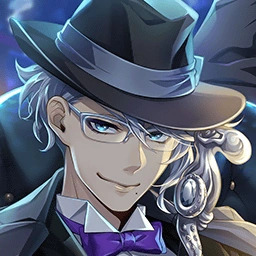
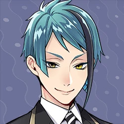
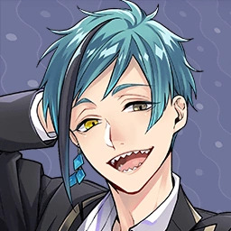

Información relevante

Personajes
Los estudiantes de Octavinelle

Ambientes
Ambientes del dormitorio

Libro 3
Resumen del libro de Octavinelle
Descripción general

Azul
Ashengrotto
Ocupación: Estudiante
Edad: 17
Destaca por su personalidad educada, calculadora y ambiciosa. Su magia única es It's a Deal, la cual le permite arrebatar las habilidades o magia de una persona a cambio de cumplirle un deseo mediante un contrato estricto.

Jade
Leech
Ocupación: Estudiante
Edad: 17
Es la mano derecha de Azul y se caracteriza por ser formal, refinado y sonriente, aunque con un lado curioso por el peligro y los hongos silvestres. Su magia única es Shocking Smile, que obliga a decir la verdad al mirarlo fijamente a los ojos.

Floyd
Leech
Ocupación: Estudiante
Edad: 17
Se distingue por ser impredecible, guiado por cambios de humor y por poner apodos de criaturas marinas a los demás. Su magia única es Bind The Heart, con la que logra desviar y distorsionar los ataques mágicos de sus oponentes.